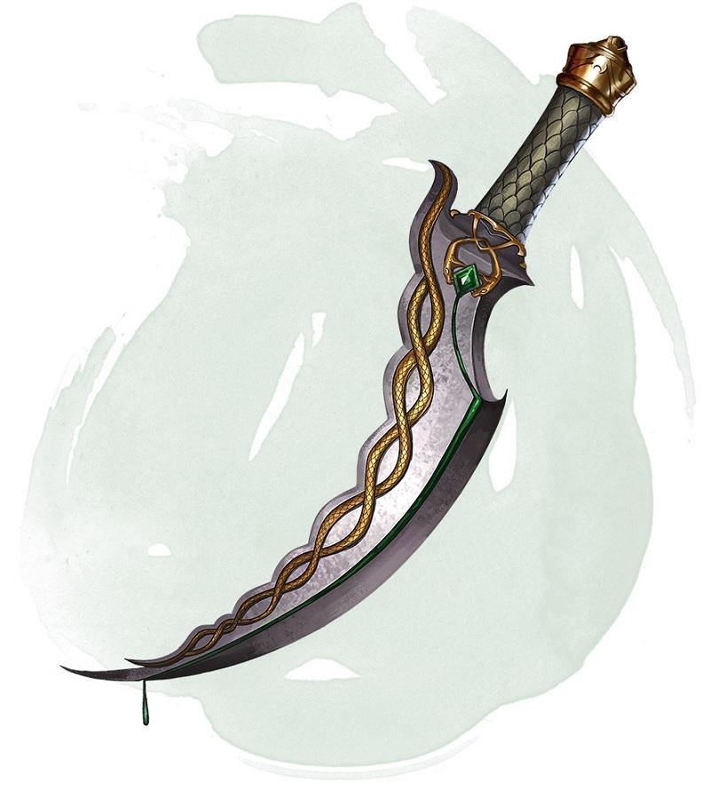

Dague venimeuse
[ Dagger of Venom ]
Arme (dague), rare
Vous obtenez un bonus de +1 aux jets d'attaque et de dégâts réalisés avec cette arme magique.
Vous pouvez utiliser une action pour qu'un épais poison noir recouvre la lame. Le poison reste dessus 1 minute ou jusqu'à ce que vous touchiez une créature lors d'une attaque avec cette arme. Cette créature doit alors réussir un jet de sauvegarde de Constitution DD 15 ou devenir empoisonnée pendant 1 minute et subir 2d10 dégâts de poison. La dague ne peut plus être utilisée de cette façon avant la prochaine aube.
Vous pouvez utiliser une action pour qu'un épais poison noir recouvre la lame. Le poison reste dessus 1 minute ou jusqu'à ce que vous touchiez une créature lors d'une attaque avec cette arme. Cette créature doit alors réussir un jet de sauvegarde de Constitution DD 15 ou devenir empoisonnée pendant 1 minute et subir 2d10 dégâts de poison. La dague ne peut plus être utilisée de cette façon avant la prochaine aube.
Dungeon Master´s Guide (SRD)
